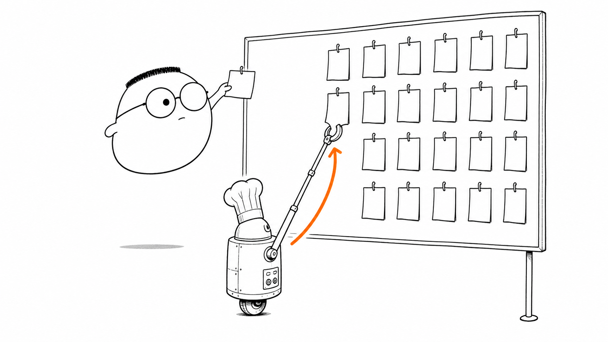
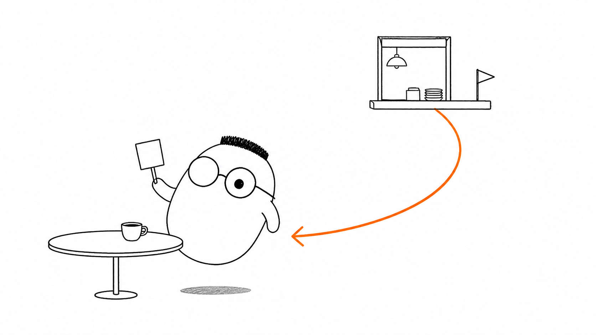
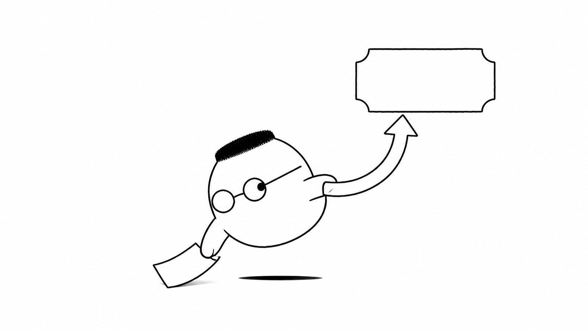

Masalah sehari-hari
Pesanan kue bisa butuh waktu tiga puluh menit. Jika kasir memasak sendiri di depan tamu, kasir berhenti menerima pesanan lain. Antrean meja bertambah dan restoran terasa macet.
background job adalah pekerjaan yang tidak perlu selesai di dalam request saat ini. Server menerima permintaan singkat, lalu pekerjaan panjang berjalan di belakang agar jalur utama tetap cepat.
Analogi Kuka
Kuka melihat papan tiket di dinding dapur. Setiap pesanan kue mendapat satu tiket. Tiket yang belum dikerjakan menunggu di papan, lalu juru masak mengambilnya satu per satu.
Papan tiket itu seperti antrean. Pesanan baru masuk ke belakang. Juru masak mengambil tiket yang siap dikerjakan. Setelah kue selesai, staf mengantar hasilnya ke meja dan tiket dapat disingkirkan.
Peta istilah dapur
Tiket adalah task. Papan tiket adalah queue. Kasir yang menempel tiket adalah producer. Juru masak yang mengambil dan mengerjakan tiket adalah consumer atau worker. Dapur belakang adalah proses terpisah dari kasir. Sistem yang menyimpan dan membagikan tiket disebut broker.
Ilustrasi

Papan itu memisahkan orang yang menerima pesanan dari orang yang mengerjakannya. Pemisahan ini membuat restoran tetap melayani tamu meski satu kue belum selesai.
Penjelasan konsep
Alur sinkron membuat pengirim menunggu sampai seluruh pekerjaan selesai. Kasir menerima pesanan, memasak kue, lalu baru dapat melayani tamu berikutnya. Cara ini mudah dipahami, tetapi lambat saat pekerjaan memakan waktu atau bergantung pada layanan lain.
Alur asinkron mengembalikan nomor lebih dahulu. Kasir menaruh tiket di queue dan segera menerima pesanan lain. Tamu dapat duduk sambil menunggu. Pekerjaan tetap berjalan, tetapi tidak menahan jalur kasir.

Cara kerja queue sederhana. Producer membuat task dan menaruhnya di queue. Worker mengambil task yang tersedia, menjalankan pekerjaan, lalu menandai hasilnya. Task berikutnya baru diambil setelah worker siap.
Producer sebaiknya cepat. Ia mengumpulkan data yang dibutuhkan dan menulis tiket yang jelas. Consumer atau worker mengurus pekerjaan berat. Beberapa worker dapat bekerja bersama untuk menghabiskan papan lebih cepat.
Pekerjaan tidak selalu berhasil pada percobaan pertama. Jika layanan tepung sedang bermasalah, retry mencoba task lagi. Backoff memberi jeda yang makin panjang agar percobaan berikutnya tidak menambah beban pada layanan yang sedang gagal.
Retry dan backoff
Worker dapat mencoba ulang beberapa kali. Jeda pendek cocok untuk gangguan singkat. Jeda yang bertambah memberi waktu bagi layanan untuk pulih. Setelah batas percobaan tercapai, task perlu ditandai gagal dan diperiksa, bukan diulang tanpa batas.

Visibility timeout
Saat worker mengambil tiket, tiket itu dapat disembunyikan sementara dari worker lain. Waktu ini disebut visibility timeout. Jika worker selesai, ia mengakui keberhasilan dan tiket dibuang. Jika worker macet terlalu lama, tiket muncul lagi agar dapat dicoba worker lain.
Jenis task
Task dapat mengirim email, membuat laporan, mengubah ukuran foto, atau membersihkan data lama. Jenisnya berbeda, tetapi polanya sama: masukkan pekerjaan ke queue, kerjakan di worker, lalu catat hasilnya.
Kasus pemakaian nyata
Toko online memakai background job untuk mengirim konfirmasi pesanan. Aplikasi foto memakainya untuk memproses gambar besar. Layanan laporan memakainya agar pengguna tidak perlu menunggu halaman terbuka sampai semua data selesai dihitung.
Idempotensi
Task yang sama bisa terkirim lebih dari sekali karena jaringan atau worker gagal setelah pekerjaan selesai. Handler idempotent memastikan percobaan kedua tidak membuat dua kue atau mengirim dua tagihan. Kunci pesanan dan catatan hasil membantu mengenali pekerjaan yang sudah selesai.
Diagram alur
Tamu memulai pesanan. Kasir menulis tiket dan menempelkannya ke papan. Juru masak mengambil tiket, memasak kue, lalu staf mengantar kue jadi ke meja.
Contoh mini
Kartu pos dapur
Tamu: pesan kue.
Kasir: memberi nomor 27.
Tamu: menunggu sambil minum.
Staf: mengantar kue ke meja.
Nomor membuat tamu tidak perlu berdiri di depan kasir. Pekerjaan tetap berjalan sampai kue tiba.
Ringkasan
- Background job adalah pekerjaan yang berjalan di luar jalur request utama.
- Queue menyimpan task sampai worker siap mengambilnya.
- Alur sinkron membuat pengirim menunggu, sedangkan alur asinkron memberi nomor lalu melanjutkan pekerjaan.
- Producer menulis task ke queue dan consumer atau worker mengerjakannya.
- Retry mengulang task yang gagal, sedangkan backoff memberi jeda agar layanan tidak makin terbebani.
- Visibility timeout menyembunyikan task yang sedang dikerjakan untuk sementara.
- Worker perlu membuat pekerjaan aman saat task yang sama datang lagi dengan idempotensi.
Pertanyaan pemahaman
- Kenapa kue dikirim ke dapur belakang, tidak dimasak di depan tamu?
- Siapa yang menempel dan siapa yang mengambil tiket di papan dapur?
- Apa yang terjadi kalau juru masak gagal membuat kue?
Mau lebih dalam
Versi teknis membahas task queue, worker, retry, dan pilihan desain dengan contoh yang lebih lengkap.
Disinggung sekilas
- Broker
- SQS Standard dan FIFO
- Desain di skala besar
- Rate limiting
- Monitoring dengan Prometheus dan Grafana
- Praktik terbaik
- Perbandingan framework
- Temporal dan orkestrasi workflow
Belum dibahas di sini
Contoh kode Go dan Python ada di ../html_notes/notes.html.